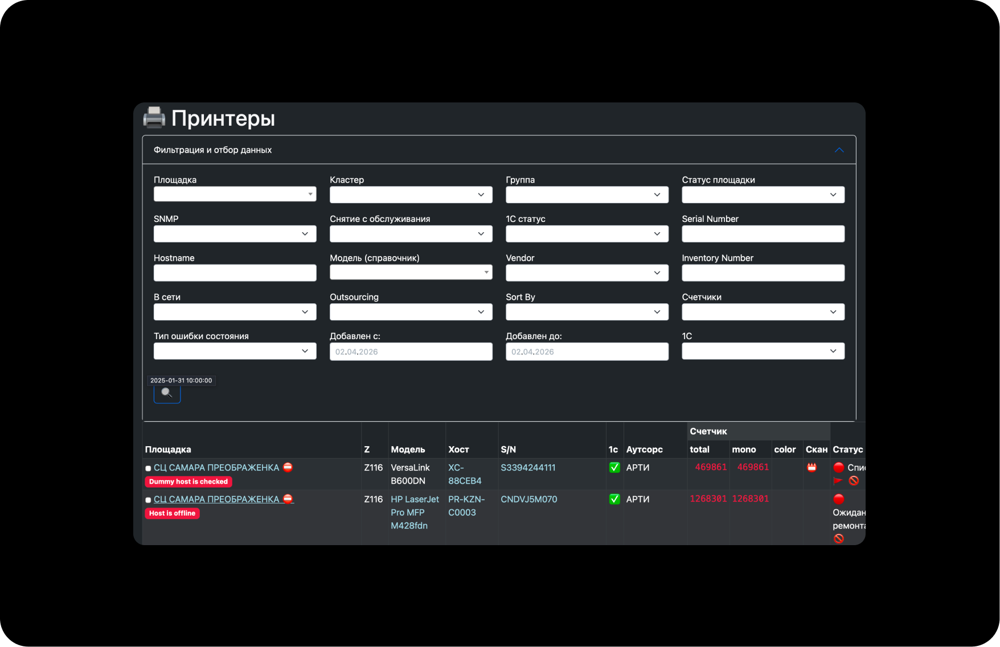
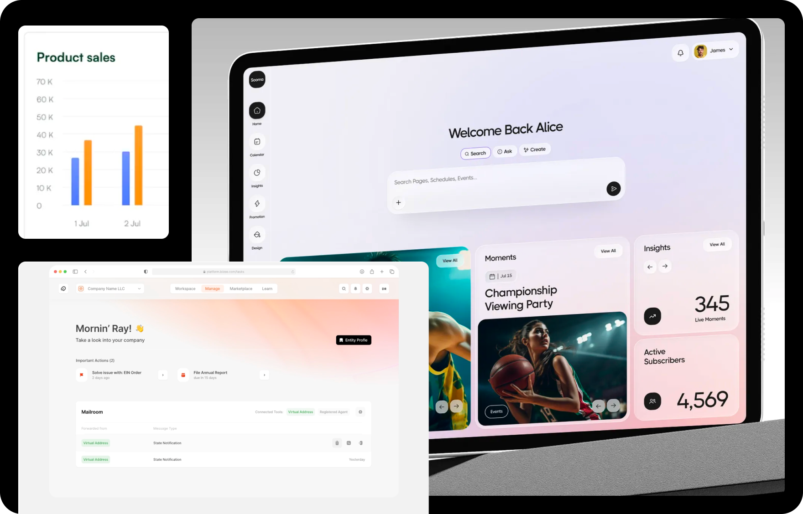
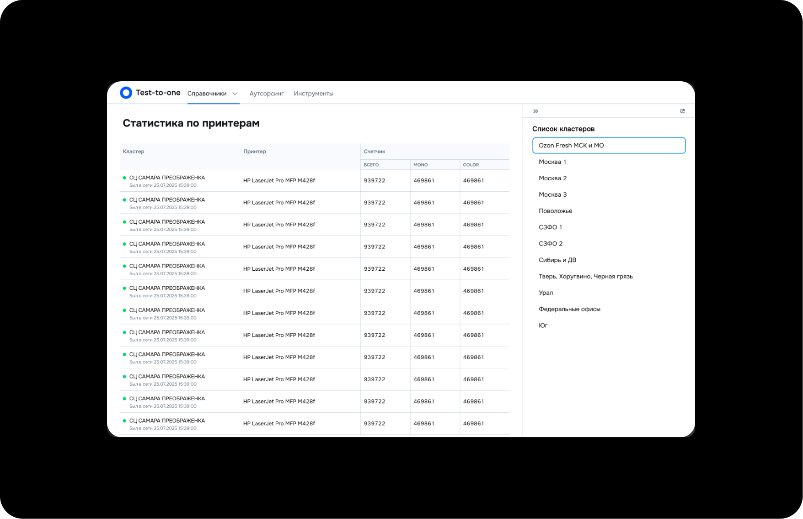
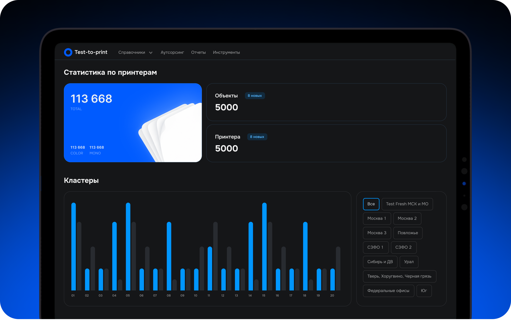

От скучных таблиц до вау-решений
Появилась задача на создание админки по мониторингу принтеров на складе. Обычно такие интерфейсы создаются как таблицы с кучей данных и фильтрацией. Все привыкли к стандарту: это быстро собрать на ДС-ке, разработчику закодить и катим в прод, пользователь как-нибудь разберется. В этот раз ожидания были такими же, был каркас сервиса, который как-то уже живет, и хотелось просто перенести привычный подход на дизайн-систему OZI

Сомнения порождают хаос
Все знают, что можно делать красиво, но где угодно в другом месте. Склады предполагают рабочий функционал, привычные паттерны для сотрудников, все должно быть как по часам. У нас сложные и высоконагруженные сервисы, и люди мы серьезные, а у разработки нет ресурса. В общем, каждый раз при мысли о «красиво» мой разум накидывал ограничения
Красивые админки: они с нами в одной комнате?
Однако вопрос не давал мне покоя. Я исследовала рынок и обнаружила, что красивые и удобные админки уже существуют в реальных продуктах. Ограничение было не в формате и даже не в ресурсе, а в привычке думать, что админка должна быть таблицей

Как могло быть по-стандарту

И как вышло по зову сердца

Решение
Уточнила ключевые метрики и вынесла их на первый экран. Вместо таблицы с фильтрами предложила дашборд: карточки показателей, динамику печати по дням и фильтрацию по кластерам. Так пользователь сразу видит нагрузку и изменения без ручной работы с таблицами
Дизайн система
ДС не предполагала графиков, карточек счетчиков и подходящей иллюстрации под контент. Кастомить пришлось почти все и добавлять компоненты, иллюстрацию генерила также самостоятельно под задачу
Разработка
С ограниченным ресурсом в виде разработки я и правда столкнулась. Искали компромиссы, чтобы не перегружать ребят, но в то же время оставить живую идею того, что я хотела изменить в подходе к админкам. Часть функционала мы упростили, в первой итерации счетчики я тоже предлагала динамичные и графичные, но сошлись на обновляемых числовых значениях в карточках. А все силы пустили на главный график, где можно смотреть статистику печати по дням
Результат
Решение презентовала и защищала перед бизнесом. Делала акцент на том, что все, что им может понадобиться, уже наглядно отображено и им не нужно прилагать лишние когнитивные усилия. Визуальные акценты помогают ориентироваться и цепляться взгляду, быстро считывать информацию. Показывала новый паттерн команде дизайнеров и получила положительный фидбек. После этого команда стала чаще экспериментировать в решениях и искать новые UI-решения. Получилось убрать ограничения не только у себя в голове, но и у всей команды. Мы стали чаще рассматривать дашборды как рабочий паттерн для админок, быть эмпатичнее к пользователю и смелее в решениях
А бизнес в следующей задаче по новой админке пришел с запросом «Мы хотим 12 дашбордов на главной», но это уже совсем другая история